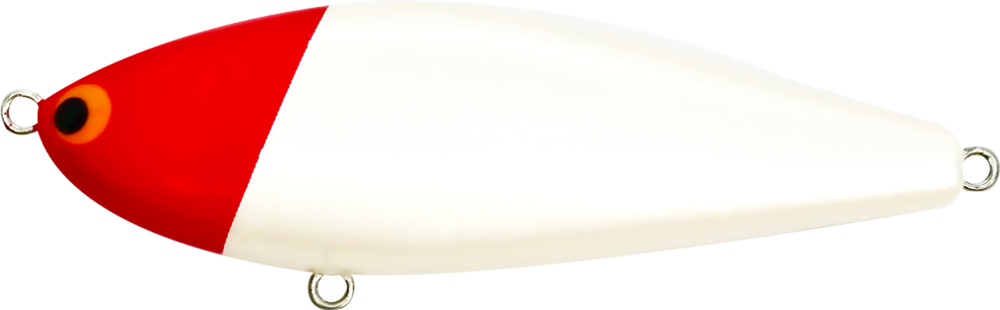
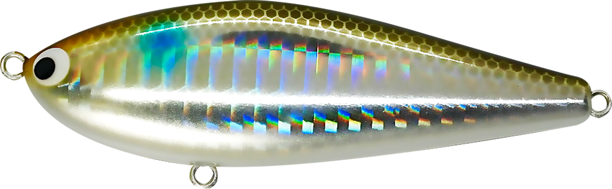
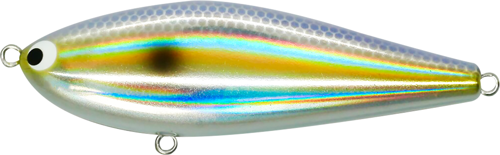
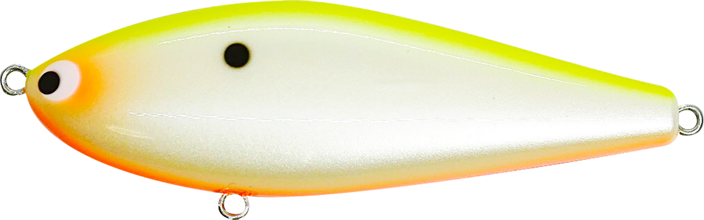
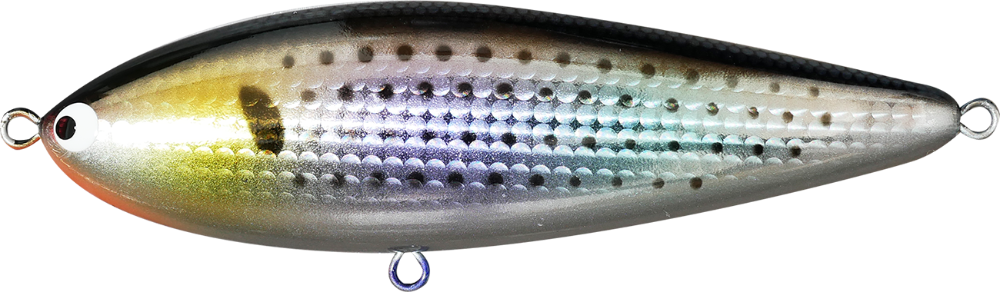
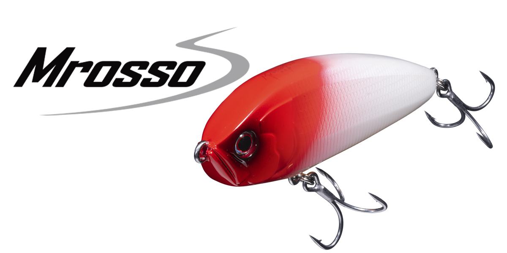
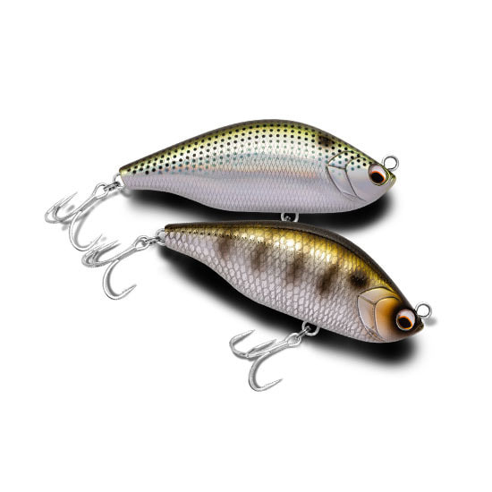

ジグザグベイト80S
（ZIGZAG BAIT 80S）
ジグザグベイト80S（ZIGZAG BAIT 80S）はポジドライブガレージのシンキングスイムベイトです。
シンプルな扁平ボディと最小限のウエイト設定によるスローシンキングのリップレスミノーで、S字スイムとジグザグアクションという静と動の両極アクションを1本でこなせるのが最大の魅力。「ヴァリアブルスイムベイト」と呼ばれる、ジグザグベイトシリーズの基本サイズです。

画像出典:ポジドライブガレージ公式HP
スペック
- メーカー
- ポジドライブガレージ
- タイプ
- シンキングスイムベイト（スローシンキング）
- 全長
- 80mm
- 自重
- 17g
- フック
- #4×2
- リング
- #4
- レンジ
- 20〜60cm
- ターゲット
- シーバス
- 価格
- 2,200円（税込）
▼今すぐチェック

ジグザグベイト80Sの特徴
スローではS字スイム、高速ではジグザグアクション。流して・巻いて・動かして使えるヴァリアブルスイムベイト
-
スローリトリーブでゆったりとしたS字スイム
スローリトリーブではゆったりとしたS字スイムを基調とし、流れを釣る「ドリフト」と呼ばれるテクニックに最適。流れに馴染ませて、違和感なく口を使わせる。
-
高速でも破綻しない安定感
高速リトリーブでは一般的なシンペンとは比べものにならない安定感を持ち、スローからファストまで幅広いリトリーブスピードで使える。
-
スロージャークでのジグザグアクション
スロージャークを入れるとジグザグアクションに変化し、高いリアクション効果が期待できる。「流して良し・巻いて良し・動かして良し」の万能さが持ち味だ。
ジグザグベイト80Sの使い方
流れのある場所では、アップクロスに投げてラインスラッグを回収しながら流すドリフトが基本。スローリトリーブのS字スイムで、流れに乗ったベイトを演出する。
反応がない時は、スロージャークを入れてジグザグアクションでリアクションを誘うか、速めのただ巻きで広く探る。レンジ20〜60cmを、着水後のカウントとリトリーブスピードで調整していきます。
ジグザグベイト80Sの得意な状況
河川や河口、水道など、流れのあるポイントでシーバスを狙う状況が最大の出番。
80mmのサイズ感は小〜中型のベイトにマッチしやすく、ドリフトで食わせたい時の定番として持っておきたい1本です。
ワンポイント
ドリフト中はラインを張りすぎず緩めすぎず、流れの重みを感じる程度のテンションを保つと、S字スイムが安定しやすくなります。
ベイトが大きい時やランカーを狙う時は、120S・120Fに持ち替えると使い分けがしやすくなります。
ジグザグベイトシリーズの使い分け
| モデル | 全長／自重 | 得意な場面 |
|---|---|---|
| 60S | 60mm／11g | 小型ベイト・レンジ20〜60cm・コンパクトでもS字スイム |
| 80S | 80mm／17g | シリーズの基本サイズ・S字スイムとジグザグアクション（本記事のモデル） |
| 100S | 100mm／35g | 中型ベイト・レンジ30〜100cmの深め |
| 120F | 120mm／40g | 大型ベイト・レンジ5〜60cmの浅め（フローティング） |
| 120S | 120mm／43g | 大型ベイト・ランカー狙い・レンジ5〜120cmの深めまで |
ジグザグベイトは60S・80S・100S・120F・120Sの5モデル展開。ベイトサイズでサイズを選び、80Sはその中心となる基本サイズだ。
オススメカラー
ジグザグベイト80Sは全16色展開。オススメのカラーを厳選して紹介します。

#01 RH定番のレッドヘッド。状況を問わず1本持っておきたいパイロットカラー。

#03 ボラボラパターンにマッチするナチュラル系。河川や河口で。

#05 サッパサッパを意識したベイトカラー。サッパが入っている港湾部や河口に。

#06 CBPチャートバックパール。濁りやナイトゲームでシルエットを出したい時に。
画像出典:ポジドライブガレージ公式HP
ジグザグベイト80Sに似ているルアー
-

ジグザグベイト120S ポジドライブガレージ 詳細はこちら＞同じジグザグベイトシリーズの120mmモデル。大型ベイトやランカー狙いの時は120S、小〜中型ベイトの時は80Sと使い分けられる。
-

ムロッソ85S OSP 詳細はこちら＞フルフラットボディのシンキングペンシル。流れに応じたS字スラロームとドリフト適性が、ジグザグベイト80Sとほぼ同じサイズ感で重なる。
-

エアオグル85SLM ノースクラフト 詳細はこちら＞85mmのスローシンキング。ワイドなS字アクションとドリフトでスレた魚を狙う使い方が、ジグザグベイト80Sと共通する。